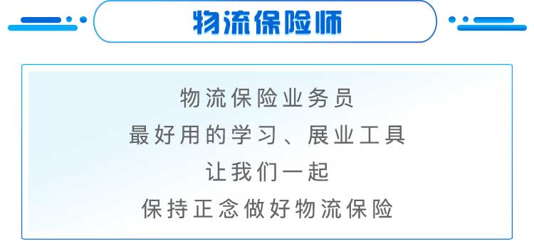

“聚保精研”系列产品，由物流保险第一人——老周领衔的聚保产品研发团队打造，凝聚了整个团队几十年物流保险行业经验以及2000+物流保险赔案处理经验。
与市场上保险公司定制的物流保险产品不同的是：“聚保精研”系列产品是聚保站在物流行业角度，针对物流行业细分领域的操作场景和业务特性，从物流企业角度出发，对法律关系、保障广度、保障深度、理赔特约等关乎物流企业利益的内容做了全面梳理，对保险公司现有保险产品进行“大手术”式的改造。
使得聚保精研系列产品呈现“无误区”、“无陷阱”、“保障宽”、“理赔易”、“价格优”等高性价比特点。是专为物流行业定制研发的物流保险系列产品。
“聚保精研”系列物流保险产品，涵盖物流企业“人、仓、货、车”全面保障，投保客户均免费享受价值万元的“聚保金牌理赔服务”。从报案指导，到单证审核、异议处理，甚至遭遇保险公司无理拒赔，都请您放心，我们包打官司，让您享受360°无忧理赔服务！
